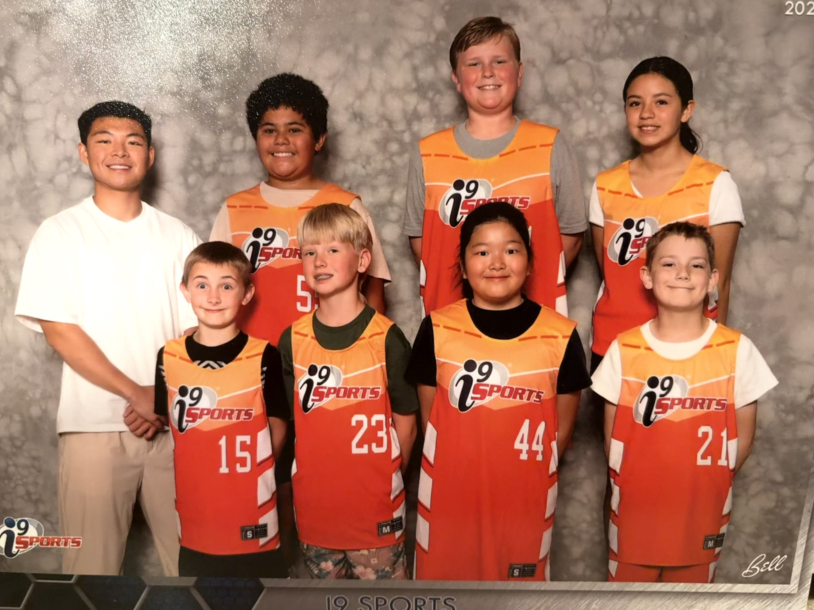

Section 01
Teamwork & Communication
Basketball is a team sport in the truest sense. You can't run a play, set a screen, or run a defense without everyone being on the same page. Five people have to work together on every single possession. For kids, that's actually a really valuable thing to practice.
I've seen quiet kids come out of their shell and start talking on defense. I've seen selfish players learn to trust their teammates. A lot of that just happens naturally when you play enough basketball. Here's what I see it build:
-
Communication skills
- Calling out screens and defensive assignments
- Picking teammates up after a mistake
- Actually listening when a coach makes an adjustment
-
Trust and accountability
- Making the right pass instead of forcing your own shot
- Showing up to practice ready to work
- Owning your mistakes instead of blaming others
-
Leadership
- Point guards learning how to run a team on the floor
- Older players looking out for the younger ones
- Knowing when to step up and when to get out of the way
Section 02
Skill Development
Basketball makes you use your whole body and your brain at the same time. You're dribbling, reading the defense, communicating with teammates, and deciding what to do — all in a split second. That kind of thinking and movement is really good for kids to develop.
The stuff you learn on the court carries over into real life too. Here are some of the things I've seen young players get better at just from playing regularly:
-
Physical skills
- Hand-eye coordination from dribbling and catching passes
- Footwork, agility, and balance
- Endurance from running up and down the court
- Body awareness and knowing where you are on the floor
-
Mental skills
- Reading the defense and making quick decisions
- Recognizing patterns in plays and adjusting
- Staying focused when the game is on the line
-
Work ethic
- Putting in reps to get your shot or handles better
- Taking feedback from coaches without getting defensive
- Setting goals and actually working toward them
Section 03
Social & Mental Health
One of the best things about being on a team is that you belong to something. You have people counting on you, people cheering for you, and people who go through the same ups and downs as you. For a lot of kids, that sense of belonging is really hard to find anywhere else.
I've coached kids who were going through tough times at home or at school, and basketball gave them somewhere to be and something to look forward to. It's not magic, but it really does help. Here's what I've seen it do for kids:
-
Handling emotions
- Learning how to deal with a bad game or a tough loss
- Celebrating wins the right way
- Keeping your head in close, stressful games
-
Feeling like you belong
- Making friends with kids you'd never meet otherwise
- Feeling like you matter to your team
- Having shared experiences that bring people together
-
Confidence
- Getting better at something through hard work
- Having coaches and teammates believe in you
- Seeing real improvement from the start of the season to the end
Section 04
By the Numbers
Here's a look at youth sports access data in the US. Basketball is the most played youth sport in the country — and this chart helps show why access and participation matter.

Section 05
See It In Action
This video does a good job showing what youth basketball actually looks like and why it matters for kids.
Are you a coach?
Try the AI coaching assistant I built. Put in your player's skill level, age, and position and it gives you practical advice on what to work on.
Try the Coaching Assistant →